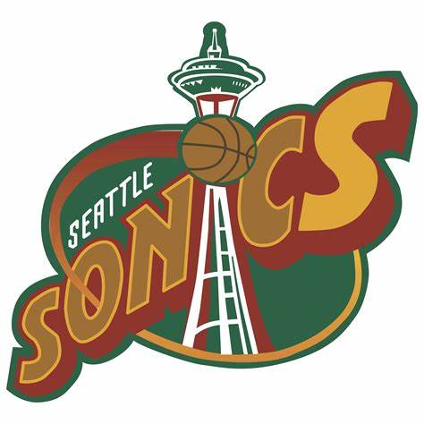

The Seattle Supersonics was a professional basketball team originated in Seattle, Washington. The team was a part of the western conference and consisted of many legendary star players throughout the years of its existence. The largest rival to the Seattle Sonics was the Portland Trailblazers who existed within the same conference. After 2008, the Sonics were sold and relocated to Oklahoma City where the team name changed to the OKC Thunder.
Here is the course cover image in a scaled size:

Here is the course cover image in its original size: